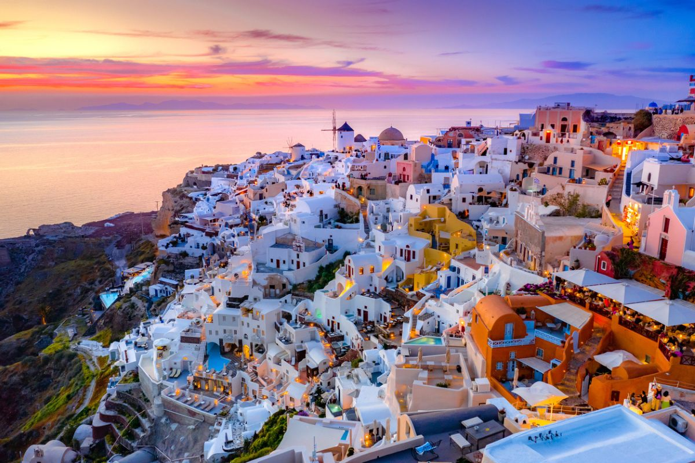
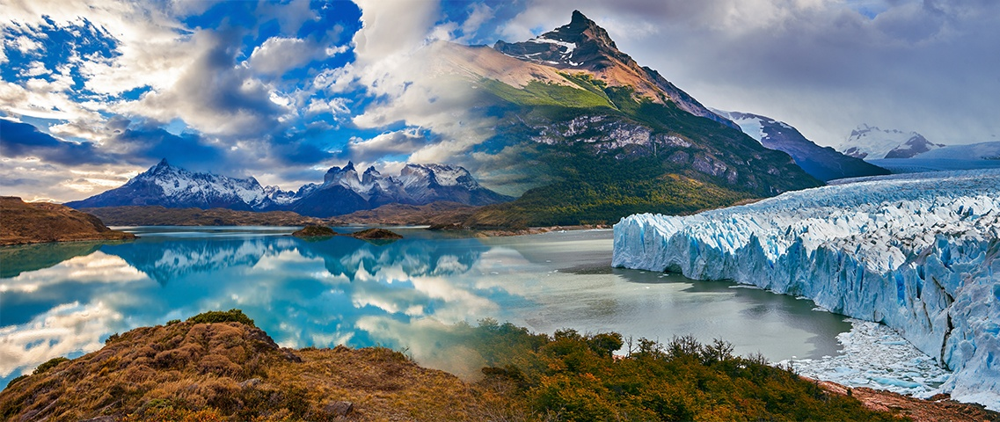

My Travel Stories
From bustling cities to serene landscapes, each destination has a story to tell. Here are some of my favorite travel experiences.

Kyoto, Japan
Kyoto is a city where ancient traditions harmoniously coexist with modern life. With its stunning temples, serene gardens, and geisha districts, it offers a glimpse into Japan's rich cultural heritage.
Highlights & Activities
- Visiting Fushimi Inari Shrine with its thousands of torii gates
- Experiencing a traditional tea ceremony
- Exploring the bamboo forests of Arashiyama
- Strolling through Gion district in the evening
- Admiring the golden pavilion at Kinkaku-ji Temple

Santorini, Greece
Famous for its white-washed buildings, blue-domed churches, and breathtaking sunsets, Santorini is a dream destination in the Aegean Sea. The island's volcanic landscape creates a unique and dramatic setting.
Highlights & Activities
- Watching the sunset from Oia village
- Exploring the ancient ruins of Akrotiri
- Swimming in the hot springs of the caldera
- Wine tasting at local vineyards
- Hiking from Fira to Oia along the caldera edge

Patagonia, Chile/Argentina
Patagonia is a vast wilderness at the southern tip of South America, known for its dramatic landscapes, towering mountains, and pristine glaciers. It's a paradise for nature lovers and adventure seekers.
Highlights & Activities
- Trekking in Torres del Paine National Park
- Witnessing the Perito Moreno Glacier
- Wildlife watching (penguins, guanacos, condors)
- Hiking to the base of Mount Fitz Roy
- Exploring the remote Tierra del Fuego